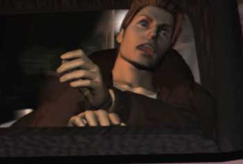
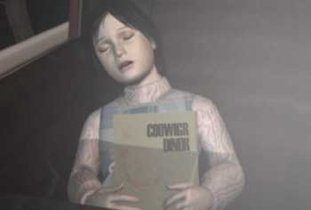
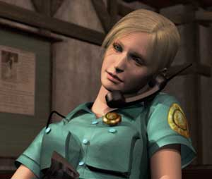
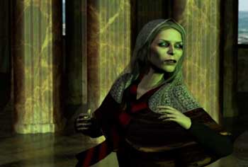
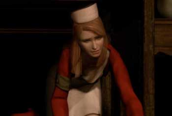
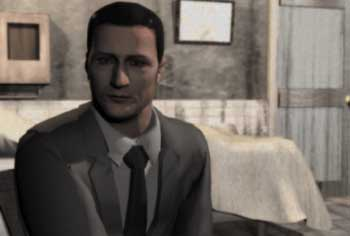
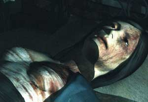

VOICI ICI LA PR2SENTATION DES PRINCIPAUX PERSONNAGES
DE SILENT HILL
RETOUR AU TEST

HARRY MASON
Cet écrivain de 32 ans est le personnage que vous incarnez
dans ce jeu. Après avoir perdu sa femme il y a plusieurs années,
Harry élève seul sa fille Cheryl . Cette année, il a décidé
de passer quelques jours de vacances dans la petite ville de
Silent hill. Mais il ne s'attendait pas à vivre de si étranges
évenements...

CHERYL MASON
Cette fillette de 7 ans est la fille de Harry,
elle vit seule avec son père depuis la mort de sa mère quelques
années auparavant. Cette jeune fille tout à fait normale se
retrouvera au centre de phénomènes inexpliqués...

CYBIL BENNETT
Officier de police de 22 ans, elle patrouillait
prés de Silent hill lors de l'accident de Harry Mason. Après
avoir retrouvé la voiture accidentée, elle aidera Harry dans
ses recherches et tentera de decouvrir l'origine des sombres
évenements qui rongent la ville...

DAHLIA GILLESPIE
Cette mystérieuse femme adepte de la chiromancie,
pourrait connaitre l'origine du mal. Les habitants de Silent
hill racontaient qu'elle avait sombré dans la folie aprés avoir
perdu son enfant lors de l'incendie, il y a 7 ans...

LISA GARLAND
Lisa est la nurse de l'hopital de Silent hill.
Elle a été témoin des étranges évenements survenus. Traumatisée,
la peur l'empéchera de réveler ce qu'elle a vu...

MICHAEL KAUFMANN
Le docteur Kaufmann fait parti de l'équipe médicale
de l'hopital de Silent hill. Cet étrange individu qui ne se
sépare jamais de sa malette noire pourrait en savoir plus qu'il
ne le laisse croire...

ALESSA
Les apparitions de cette jeune femme restent enigmatiques.
Son étrange ressemblance avec la femme de Harry laisse planer
un mystère sur ses liens avec les évenements se déroulant à
Silent hill.